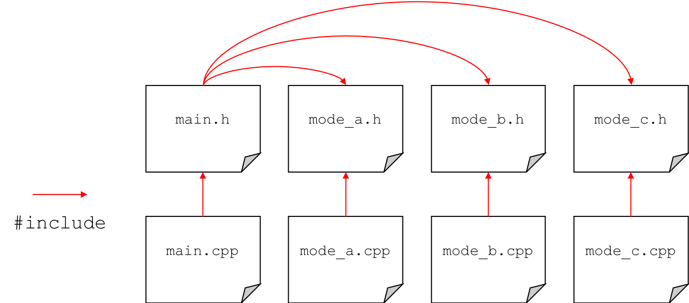

When writing small programs, it can make sense to keep all the code in one source file. This will contain the main() function along with any extra functions created by the developer. When projects start to get larger, this approach is no longer feasible and it makes sense to split the source code across multiple files.
The overall project is split logically into separate blocks, each of which represents a different functionality of the program. Each of these blocks would be stored in a different source file (often with an associated header). For example, a project may have some kind of menu system to select different modes. The code for each of the modes (and even the menu) could be stored in separate source files. The main file that contains the main() function, is used to 'glue' all of the different source files together.
Object-orientation is an extension of this idea in the sense that different functionality blocks can be represented by classes. C++ classes are also usually in their own source files. A .h header file contains the class definition and an accompanying .cpp file that contains the actual code implementation.
When splitting code across multiple files, it is usual for each of the source files (.cpp) to have an associated header file (.h). The header files contains definitions that are required across the multiple files such as function prototypes and global variables. The different source files can use the #include pre-processor directive to include the header files, meaning that the code stored in other files (such as functions) is visible.

In the diagram above, each of the source files includes its respective header and the main header file includes all the other headers. Function prototypes appear in the header and the function implementation appears in the .cpp file. This essentially means that the headers define the interface to the source file. In this regard, the main file knows the interface for each different source file and hence the functions implemented in those files are visible and are able to be called from the main function.
This way of structuring and splitting up code paves the way towards the creation of software libraries. For example, we may create a source file that contains a lot of different mathematical functions. We could then refer to that as a maths library. In future, any time we needed to do a particular mathematical operation, we could simply include that library rather than writing it all over again. The interface (or application programming interface - API) of the library is defined in the .h header file of the library.
This is a basic example of how a library (a maths library in this case) could be implemented across multiple source files. We have our main source file and header along with a maths library in separate .cpp and .h files. The maths library contain a function for computing the sum of two integers. The function prototype appears in maths.h and the implementation in maths.cpp. Since main.cpp includes maths.h (though the main header file), we are able to use the sum function in our main file, even if it is declared and defined elsewhere.
main.h
1 2 3 4 5 6 7 |
#ifndef MAIN_H #define MAIN_H // include the maths library header file #include "maths.h" #endif |
main.cpp
1 2 3 4 5 6 7 8 9 10 |
#include <iostream> // including the main header will ensure all required files are pulled in #include "main.h" int main() { int total = sum(5, 6); // sum function defined in maths.h std::cout << "Sum = " << total << std::endl; return 0; } |
maths.h
1 2 3 4 5 6 7 |
#ifndef MATHS_H #define MATHS_H // function takes in two integers and returns the sum int sum(int a, int b); #endif |
maths.cpp
1 2 3 |
#include "maths.h" int sum(int a, int b) { return a + b; } |
Note that for standard template libraries (STL) such as iostream and string, the include directive uses angle brackets < and >. This informs the compiler that the library files are located in the standard system directories (installation directories if you will). Programmer-created headers use quotation marks instead. This tells the compiler to first look in the current working directory for the header. If it can't be found, it will then look in the standard system directories.
Compiling a software project that contains multiple source files is slightly more involved than compiling a single source file.
To compile the previous example, you would specify both of the source files in the compile command.
g++ -Wall -o main.exe main.cpp maths.cpp
Note that we do not need to specify the header files as they are included through the source (.cpp) files.
Sometimes you may get an error regarding the header files not being able to be found, in this case you need to include the additional -I. compile option to tell the compiler that the header can be found in the current directory.
g++ -Wall -I. -o main.exe main.cpp maths.cpp
This approach is fine for small projects split over a handful of source files as it is not too hard to manually type in the compile command, however imagine having to compile a project with millions of lines of code spread over hundreds of source files!
In this case, it is better to use a makefile.
Using a makefile, we can place our compile commands in a file and then essentially run that file using the make command.
The default name for a makefile is 'Makefile' (with no extension) so if your makefile has this name, you can compile by simply typing
make
on the command line (assuming you are in the correct directory). If you makefile has a different name, you would need to use the -f flag to specify it.
make -f MyMakefile
The most basic makefile would look contain something like below.
Makefile
1 2 |
main.exe: main.cpp maths.cpp g++ -o main.exe -Wall main.cpp maths.cpp |
The first line simply specifies the target (main.exe) and its dependencies (main.cpp and maths.cpp). The second line (important to note that this is tabbed in using a tab character and not several spaces) contains the compile command.
At any point you run the 'make' command and one of the dependencies has changed, then the compile command will be executed. If none of the dependencies has changed and you tried to run 'make' again, you would get the following message and compilation would not occur
make: `main.exe' is up to date.
However, imagine a scenario in which you have 100 different source files and only one of them had changed very slightly. This would mean that every source file would have to be re-compiled, even though in 99 cases, it would be a waste of time as the source had not changed. In the cases when we only have a couple of source files, compilation seems to happen almost instantly, however, when you have lots of source files, it can take a very long time time (many minutes or even hours for huge projects). Imagine having to wait that long, just because you had missed a ; in one source file!
A better approach is to compile each source file to its object code (.o) using the -c compile flag. In this approach, each source is compiled to object code and the final creation of the .exe executable file is done in the linking step of compilation i.e. the different .o object files are linked together to create the .exe.
This means that the first time the project is compiled, each of the source will be compiled into object code, and then linked to create the .exe. This can still take a long time. However, if we need to subsequnetly change just one of the source files, when we re-compile using 'make', only that one updated source file will be re-compiled into the updated object code. The other, unchanged .o files will not be re-compiled. This means we only need to do one compile and the final linking stage, dramatically reducing time.
Further to this, we can also use variables in Makefiles to make them easier to edit. For example, we can store the name of the compiler (g++ for C++) in a variable, along with any compile flags (-c -Wall). This means if we wish to change them in future, we can just change them in one place in the Makefile.
A better Makefile is shown below.
1 2 3 4 5 6 7 8 9 10 11 12 13 14 15 16 17 18 19 |
# Set compiler CC=g++ #Compile flags (-c to output object file .o) CFLAGS=-c -Wall all: main.exe main.exe: main.o maths.o $(CC) main.o maths.o -o main.exe main.o: main.cpp $(CC) $(CFLAGS) main.cpp maths.o: maths.cpp $(CC) $(CFLAGS) maths.cpp clean: rm *.o main.exe |
It would be run in exactly the same way i.e.
make
Here we can see that the dependencies of the .exe file are the .o files. We also include rules for building the .o files i.e. they depend on the relevant .cpp files. Note that we can also include comments using the # character.
Finally, note the final 'clean' command. This enables us to clean the directory by deleting the .o files and the .exe files. These are typically much larger in filesize than the raw source files. If you wanted to email someone your project, you only need to email them the source files and Makefile and they can build the project themselves. You run the clean command like so:
make clean
It can save you a lot of time in the long run by spending some time at the start of your project creating a makefile!
This is a basic example of how a class is typically implemented across multiple source files. It is a simple class used to represent a circle and includes functions for setting (mutating) the radius and getting (accessing) the area. In this example, the class is declared in the header file. This contains the private and public member variables and functions. The actual functions themselves are defined in the class .cpp file. We use the scope resolution operator :: in the .cpp file to specify that the functions belong to the Circle class.
To use the class in our main function, we simply need to include the class header file.
main.cpp
1 2 3 4 5 6 7 8 9 10 11 12 13 14 15 16 |
#include <iostream> // include the class header file in main #include "Circle.h" int main() { std::cout << "Enter circle radius (in metres): "; float radius; std::cin >> radius; Circle circle; circle.set_radius(radius); float area = circle.get_area(); std::cout << "The circle has an area of " << area << " m^2.\n"; return 0; } |
Circle.h
1 2 3 4 5 6 7 8 9 10 11 12 13 14 15 16 17 |
#ifndef CIRCLE_H #define CIRCLE_H #define PI 3.14159265 class Circle { public: // only accessors and mutators are public in this example void set_radius(float radius); float get_area(); private: // member variables are private and set/get via accessor/mutator float _radius; float _area; }; #endif |
Circle.cpp
1 2 3 4 5 |
#include "Circle.h" void Circle::set_radius(float radius) { _radius = radius; } float Circle::get_area() { return PI * _radius * _radius; } |
To compile the example, we would need to specify both source (.cpp) files in the compile command (or makefile). Note we don't need to specify the Circle header file since this is included through the header.
g++ -Wall -o main.exe main.cpp Circle.cpp
Of course, a makefile could also be used that specified the dependencies of the executable.
Sometimes you may come across the extern keyword when working with source code spread across multiple files. This is generally in the case of using global variables, which can be seen across multiple files. Although the use of global variables is frowned upon, they are common in embedded systems programming. For example, when using the Mbed platform, you might have a DigitalOut object for controlling an LED defined globally so it can be accessed across different functions and files.
Consider the simplifed example below.
main.h
1 2 3 4 5 6 |
#ifndef MAIN_H #define MAIN_H int global_variable = 99; #endif |
main.cpp
1 2 3 4 5 6 7 8 9 |
#include <iostream> #include "main.h" #include "extern.h" int main() { change_global_variable(); std::cout << "Global variable = " << global_variable << std::endl; return 0; } |
extern.h
1 2 3 4 5 6 |
#ifndef EXTERN_H #define EXTERN_H void change_global_variable(); #endif |
extern.cpp
1 2 3 4 5 |
#include "extern.h" void change_global_variable() { global_variable = 0; } |
Here we have simply created a global variable in the main.h file and have a function declared in our external source file that tries to change its value. We call this function from main() and then print out the new value of the global variable.
When we try and compile this example, we will obtain an error.
extern.cpp:4:3: error: use of undeclared identifier 'global_variable'
global_variable = 0;
^
1 error generated.
The error tells us the the identifier 'global_variable' in extern.cpp has not been declared.
Since the global variable has been declared in main.h, you may think that you can solve this problem by including main.h in extern.cpp.
1 2 3 4 5 6 |
#include "extern.h" #include "main.h" void change_global_variable() { global_variable = 0; } |
This is a perfectly understandable thought, as the variable is declared in main.h, so if we include it, we will be able to use the variable in extern.cpp. Right? Wrong. We now get the compile error below.
duplicate symbol _global_variable in:
/var/folders/65/7bfdvpx16vbc362vf_lmjlf40000gn/T//cciGyJUq.o
/var/folders/65/7bfdvpx16vbc362vf_lmjlf40000gn/T//ccGgQZiA.o
ld: 1 duplicate symbol for architecture x86_64
collect2: error: ld returned 1 exit status
This error suggests something about an duplicate symbol for our global variable. If you think about it, now both extern.cpp and main.cpp include main.h. When the pre-processor copies the contents of main.h into each of those files, we will actually end up with two declarations of the variable, hence the error.
We fix the problem by making use of the extern keyword.
main.h
1 2 3 4 5 6 |
#ifndef MAIN_H #define MAIN_H extern int global_variable; #endif |
main.cpp
1 2 3 4 5 6 7 8 9 10 11 |
#include <iostream> #include "main.h" #include "extern.h" int global_variable = 99; int main() { change_global_variable(); std::cout << "Global variable = " << global_variable << std::endl; return 0; } |
extern.h
1 2 3 4 5 6 |
#ifndef EXTERN_H #define EXTERN_H void change_global_variable(); #endif |
extern.cpp
1 2 3 4 5 6 |
#include "extern.h" #include "main.h" void change_global_variable() { global_variable = 0; } |
The code will now compile and run correctly. The extern keyword (in main.h) tells the compiler that this variable exists somewhere in the project. Note that it isn't initialised with a value here. This is because it isn't actually declared here. The global variable is actually declared (and initialised) in main.cpp. Note that is must be declared outside of any function.
Every file that includes main.h, will now know that an integer variable named global_variable exists somewhere and the linker will ensure that they link to the correct variable at compile time.
When working with larger projects, it is very common to split them across multiple files. This improves the organisation of projects and can aid re-usability. When compiling files spread across mulitple files, it is common to use makefiles. Note that you may have to make use of the extern keyword when using global variables accessed from multiple files.